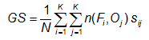
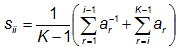
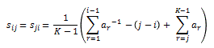
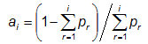

Gerrity skill score -

where pi,j are the sample probabilities in the
contingency table (pi,j = ni,j / N),
and si,j are elements of a scoring matrix given by
 (i = j, diagonal),
 (i ≠ j, off-diagonal), and

Answers the question: What was the accuracy of the forecast in predicting the correct category, relative to that of random chance?
Range: -1 to 1, 0 indicates no skill. Perfect score: 1
Characteristics: Uses all entries in the contingency table, does not depend on the forecast distribution, and is equitable (i.e., random and constant forecasts score a value of 0). GSS does not reward conservative forecasting like HSS and HK, but rather rewards forecasts for correctly predicting the less likely categories. Smaller errors are penalized less than larger forecast errors. This is achieved through the use of the scoring matrix. A more detailed discussion and examples for 3-category forecasts can be found in Jolliffe and Stephenson (2003).
- - - - - - - - - - - - - - - - - - - - - - - - - - - - - - - - - - - - - - - - - - - - - - - - - - - - - - - - - - - - - - - - - - - - - -